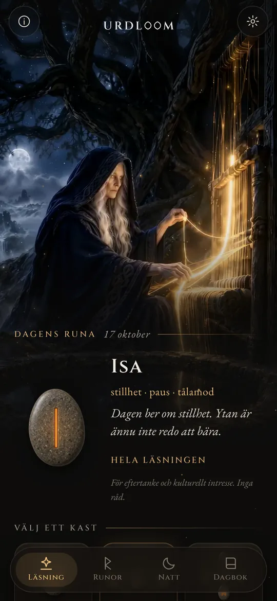
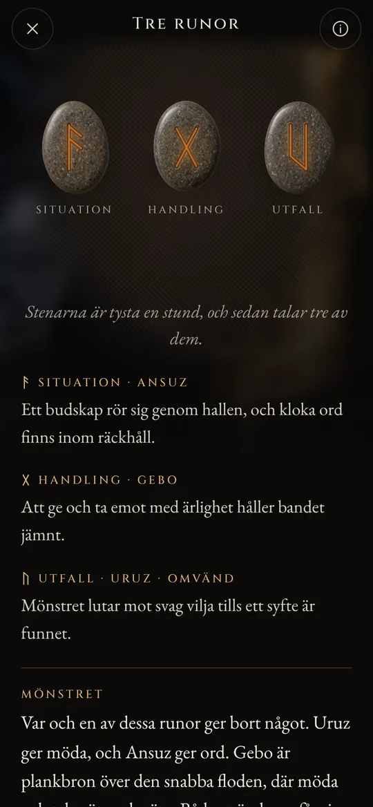
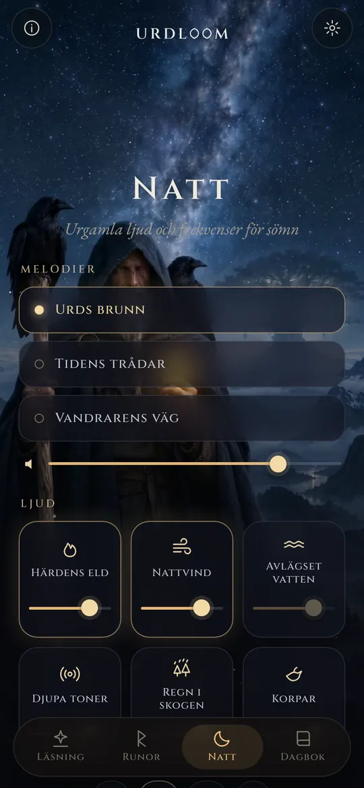
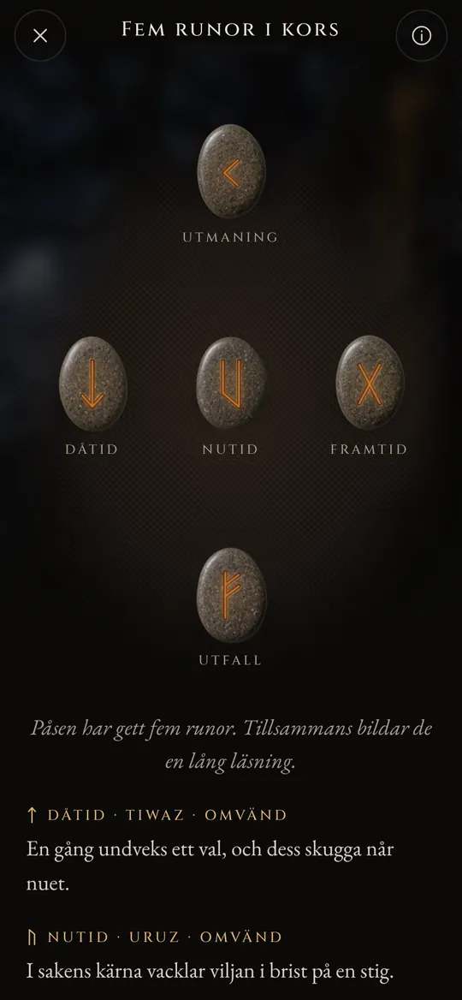

Runläsningar ur ödets brunn.
Kasta Elder Futhark, läs det som faller med de gamla dikternas röst och låt nattens ljud bära dig in i sömnen.
Tre kvinnor sitter vid en brunn
I de gamla nordiska dikterna sitter tre nornor vid en brunn under Yggdrasil, världsträdet. De vattnar dess rötter, ristar stavar och lägger fast livet för alla som föds. Den äldsta är Urd. Hennes namn betyder det som har skett, och brunnen bär hennes namn.
Urdloom har fått sitt namn efter henne, och efter vävstolen där ödet sades vävas. Appen behåller den stämningen: en pung med stenar i handen, en duk på golvet och läsningar skrivna med sagornas röst snarare än horoskopets.

Därifrån kommer mör, mycket vetande, tre ur sjön under trädet.Völuspá, strof 20
Håll, skaka, släpp
Håll pungen så skramlar stenarna i handen. Släpp, så flyger de ut på duken, rullar, stannar och vänds en i taget. Läsningen visas under dem.

En runa
En enda sten för dagen som väntar, eller för en fråga som kan besvaras med ja eller nej. Tryck, så är den kastad.


Tre runor
Situation, handling, utfall. Läs dem från vänster till höger som en kort saga och sedan som en helhet: en avslutande tråd visar hur de tre talar med varandra.

Fem runor i kors
Dåtid, nutid och framtid tvärs över mitten, utmaningen ovanför och utfallet nedanför, med dig i hjärtat av alltihop.




Varje läsning är skriven för hand: de tjugofyra runorna, varje par och alla 2 024 kombinationer av tre, på vart och ett av de tjugotvå språken. Ingenting genereras medan du väntar.

De tjugofyra runorna
Elder Futhark är det äldsta runalfabetet, ristat från ungefär 100-talet till 700-talet. Dess tjugofyra tecken delas in i tre familjer om åtta, kallade ätter, var och en uppkallad efter den gud vars runa står först. Rör vid en sten för att läsa den.
Frejs ätt
Hagals ätt
Tyrs ätt
Runornas namn behåller sin gamla form på alla språk. De är tecknens egna namn, rekonstruerade av forskare ur runpoemen och de äldsta alfabeten.
Runornas korta historia
Runor är bokstäver innan de är något annat. Germanska folk ristade dem i trä, ben, metall och sten under ungefär femtonhundra år. Så här har tecknen och den gamla seden att kasta lott nått fram till oss.

Lotter på en vit duk
Den romerske historikern Tacitus skriver att germanerna skär en gren från ett fruktträd i stickor, märker dem med tecken och strör ut dem på en vit duk. En präst eller husets överhuvud tar upp tre, en i taget, och tyder dem. Han säger inte att tecknen var runor, men gesten är densamma som Urdloom behåller.
De första inskrifterna
En benkam som hittats i Vimose mosse i Danmark bär en av de äldsta kända runinskrifterna, ett enda ord: harja. Spjutspetsar, spännen och amuletter från samma århundraden visar att skriften redan hade spridit sig över Norden.
Hela raden på en sten
På Kylverstenen från Gotland ristade någon alla tjugofyra tecknen i ordning, den äldsta fullständiga futhark vi har. Raden har fått sitt namn efter sina sex första bokstäver: f, u, th, a, r, k.
Guldhornen
Det ena av de två guldhornen från Gallehus i Danmark bär en allittererande versrad: Jag, Hlewagastiz, Holts son, gjorde hornet. Det är en av de tidigaste diktraderna på något germanskt språk.
Sexton tecken för vikingatiden
I Skandinavien skärs alfabetet ned till sexton tecken, den yngre futharken. Tusentals minnesstenar reses med dess bokstäver, bland dem de stora stenarna i Jelling i Danmark.
Dikterna skrivs ned
Isländska skrivare tecknar ned de eddiska dikterna. I Völuspá sitter nornorna vid Urds brunn; i Hávamál hänger Oden nio nätter i det vindpinade trädet och tar upp runorna med ett skri.
En vers för varje runa
Runpoem från Norge och Island, tillsammans med ett äldre fornengelskt, ger varje runa en kort vers: boskap väcker split mellan fränder, hagel är det kallaste kornet, is är mycket hal. Mycket av det vi vet om runornas betydelser kommer från dessa verser.
Att läsa igen
Att använda runorna för eftertanke är ett modernt återupplivande, byggt på dessa dikter och på Eddans bilder. Urdloom står öppet i den traditionen: appen gör inte anspråk på att vara ett urgammalt orakel, bara på att läsa de gamla tecknen med omsorg.

Urgamla ljud och frekvenser för sömn
När dagen är slut kliver vandraren ut under stjärnorna. Välj en melodi, lägg ljud ovanpå och ställ in en timer. Ljuden spelar vidare med skärmen avstängd och tonar bort av sig själva.
Tre melodier: Urds brunn, Tidens trådar och Vandrarens väg, byggda på strupsång, ramtrumma och stråkspelad tagelharpa.
Sex lager att blanda, vart och ett med sin egen nivå: härdens eld, nattvind, avlägset vatten, djupa toner, regn i skogen och korpar.
Varje ljud är gjort för Urdloom. Ingenting spelas från internet.
Små saker som spelar roll
- En runa varje morgon
- En sten väntar med framsidan nedåt på första skärmen. Om du vill berättar en kort hälsning varje morgon vilken runa som dragits åt dig.
- En dagbok
- Spara de läsningar som talar till dig, tillsammans med frågan du ställde.
- Läsningar att dela
- Skicka en läsning som bild: stenarna som de föll och orden under dem.
- Tjugotvå språk
- Vart och ett skrivet och granskat av människor som läser det, med typsnitt och storlek som du kan ändra.
Det som händer här stannar här
Urdloom fungerar utan internet. Det finns inget konto, ingen registrering och ingen reklam, och appen innehåller ingen analys eller spårning av något slag. Dina frågor, läsningar och din dagbok stannar på din telefon.
IntegritetFrågor
Förutsäger Urdloom framtiden?
Nej. Läsningarna är till för eftertanke och kulturellt intresse. De pekar, som de gamla runorna gjorde, och betydelsen tar form i ditt eget liv. Inget i appen är medicinsk, ekonomisk, juridisk eller annan professionell rådgivning.
Varför låter språket gammalt?
Runorna kommer från en värld av dikter, sagor och gåtor. Vi skrev medvetet läsningarna med den rösten och höll dem så nära runtraditionen vi kunde, på alla språk.
Behöver jag en internetanslutning?
Nej. Allt, från läsningarna till nattens ljud, finns i appen.
Vilka språk finns det?
Engelska, turkiska, tyska, franska, spanska, italienska, portugisiska, ryska, ukrainska, polska, nederländska, svenska, norska, finska, grekiska, arabiska, hindi, indonesiska, japanska, koreanska, kinesiska och albanska.
Skriv till oss
Frågor, ett ord som låter fel på ditt språk eller en läsning som stannade kvar hos dig: vi läser varje meddelande.
support@urdloom.app